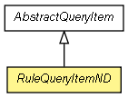

context.arch.discoverer.query
Class RuleQueryItemND<C1,C2>
java.lang.Object
 context.arch.discoverer.query.AbstractQueryItem<C1,C2>
context.arch.discoverer.query.RuleQueryItemND<C1,C2>
context.arch.discoverer.query.AbstractQueryItem<C1,C2>
context.arch.discoverer.query.RuleQueryItemND<C1,C2>
public abstract class RuleQueryItemND<C1,C2>
- extends AbstractQueryItem<C1,C2>

QueryItem that can handle multiple dimensions (or attributes or element), rather than just one.
Useful for cases such as calculating distance based on latitude and longitude,
with a third attribute for error margin.
TODO: rename to MultiQueryItem?
|
Method Summary |
static AbstractQueryItem<?,?> |
factory(java.lang.String name,
AbstractComparison<?,?> comparison,
AbstractElement<?,?,?>... elements)
|
static AbstractQueryItem<?,?> |
fromDataObject(DataObject data)
Maybe use this as a reference implementation for subclasses to override. |
AbstractComparison<C1,C2> |
getComparison()
|
protected static AbstractComparison<?,?> |
getComparison(DataObject data)
|
AbstractElement<?,?,?>[] |
getElementsToMatch()
|
protected static AbstractElement<?,?,?>[] |
getElementsToMatch(DataObject data)
|
abstract java.lang.String |
getName()
|
DataObject |
toDataObject()
Returns a DataObject version of this object |
java.lang.String |
toString()
Returns a printable version of this object |
| Methods inherited from class java.lang.Object |
clone, equals, finalize, getClass, hashCode, notify, notifyAll, wait, wait, wait |
elementsToMatch
protected AbstractElement<?,?,?>[] elementsToMatch
- Stores internally as an array of abstract elements.
Up to subclasses to make sense of it with specifics.
comparison
protected AbstractComparison<C1,C2> comparison
RuleQueryItemND
public RuleQueryItemND(AbstractComparison<C1,C2> comparison,
AbstractElement<?,?,?>... elements)
getElementsToMatch
public AbstractElement<?,?,?>[] getElementsToMatch()
getComparison
public AbstractComparison<C1,C2> getComparison()
getName
public abstract java.lang.String getName()
toDataObject
public DataObject toDataObject()
- Description copied from class:
AbstractQueryItem
- Returns a DataObject version of this object
- Specified by:
toDataObject in class AbstractQueryItem<C1,C2>
- Returns:
- DataObject
fromDataObject
public static AbstractQueryItem<?,?> fromDataObject(DataObject data)
- Maybe use this as a reference implementation for subclasses to override.
- Parameters:
data -
- Returns:
factory
public static AbstractQueryItem<?,?> factory(java.lang.String name,
AbstractComparison<?,?> comparison,
AbstractElement<?,?,?>... elements)
toString
public java.lang.String toString()
- Description copied from class:
AbstractQueryItem
- Returns a printable version of this object
- Specified by:
toString in class AbstractQueryItem<C1,C2>
- Returns:
- String
getComparison
protected static AbstractComparison<?,?> getComparison(DataObject data)
getElementsToMatch
protected static AbstractElement<?,?,?>[] getElementsToMatch(DataObject data)